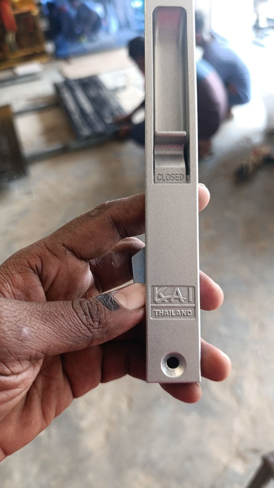
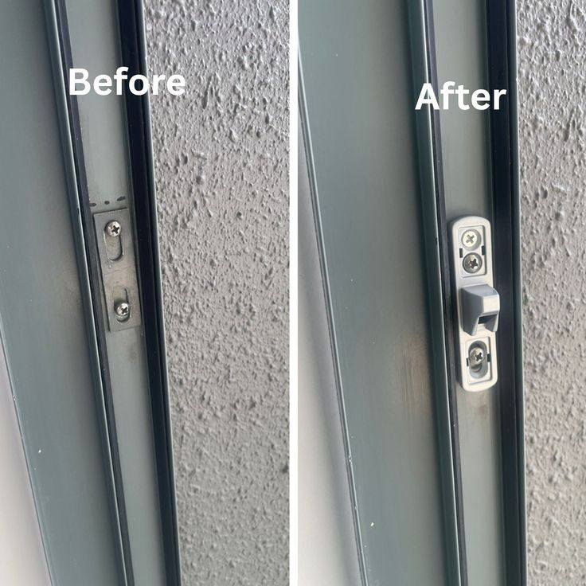

City Mistri
City Mistri
Dhaka shohorer pray proti bashatei ekhon Thai aluminum glass doors aur windows use kora hoy. Kintu dirghodin beboharer fole, bishesh kore sosta (cheap) materials use korle, ei dorja gulor lock khub druto nosto hoye jay. Ajker ei comprehensive in-depth guide-e amra janbo—Thai glass lock keno nosto hoy, koto rokomer lock market-e ache, lock change korte koto khoroch hoy, aur City Mistri theke kivabe apni best service ti paben.
Our Professional Lock & Repair Work
Niche City Mistri er real repair kajar kichu pro chobi dewa holo. Amra shobshomoy clean, safe aur professional tools use kore kaj kori.



💡 Pro Tip: Don't Force a Jammed Lock!
Jodi apnar lock atke jay, kokhonoi jor kore chabi ghuraben na ba tene kholar chesta korben na. Ete lock er vitorer pin bhenge jete pare ba heavy pressure e glass venge accident hote pare. Sathe sathe City Mistri ke call korun.
Top Reasons Why Thai Glass Locks Fail
Dhaka city-te amader expert team protidin 10-15 ti lock change service diye thake. Amader oviggota theke dekha geche je, Thai glass lock mainly 4 ti karone nosto hoy:
- Broken Wheels (Chaka Nosto Howa): Eta sobcheye boro karon! Sliding door er nicher chaka (roller) jodi nosto ba khoy hoye jay, tahole pura door ta niche neme ashe. Fole lock er hook ar frame er chidro (hole) er sathe match kore na. Tokhon jor kore lock korte gele lock venge jay.
- Dust and Dirt Accumulation: Dhaka shohore prochur dhulabali. Ei dhula locket vitor dhuke spring aur pin gulo ke jam kore dey.
- Cheap Materials (Local Locks): Pashar dokan theke ৳100-৳150 takay kena local lock gulo te khub e nimnomaner plastic aur loha use kora hoy, jeta 2-3 mash por e beke jay ba jong (rust) dhore jay.
- Rough Usage: Office ba commercial space e door gulo khub jore push ba pull kora hoy, jar fole lock er internal mechanism druto damage hoy.
Types of Thai Glass Locks Available in BD
Market e bibhinno dhoroner lock pawa jay. Apnar door er design onujayi sothik lock ti beche newa joruri:
- Star Lock (Sliding Door Lock): Eta sobcheye common lock. Ete ekti hook thake jeta button chaple ba chabi ghuraley frame er sathe atke jay. Original Kinglong star lock er durability onek beshi.
- Push Lock (Window Lock): Janalar jonno ei lock use kora hoy. Eta vitore push korlei lock hoye jay aur button press korle khule jay.
- Crescent Lock: Eta chadrer (moon) moto dekhte ekti half-round lock, jeta ghurate hoy. Ekhon kar modern basay eta kom use hoy.
- Double Glass Lock: Duti sliding glass jekhane majhkane eshe mile jay, sekhane ei special lock use kora hoy.
Thai Glass Lock Change Price in Dhaka (2026 Guide)
Lock change er cost ashole depend kore apni ki dhoroner material use korchen tar upor. City Mistri shobshomoy Original Kinglong (Premium) ba bhalo quality-r lock use kora recommend kore, jate bar bar mistri dakte na hoy.
| Service / Lock Name | Material Quality | Estimated Price (BDT) |
|---|---|---|
| Standard Window Push Lock Change | Medium / Local Quality | ৳ 250 - ৳ 350 |
| Sliding Door Star Lock Replacement | Medium Quality | ৳ 350 - ৳ 450 |
| Premium Star Lock Change (Highly Recommended) | Original Kinglong / Chung Hua | ৳ 500 - ৳ 600+ |
| Double Door Hook Lock | Premium Metal Fitting | ৳ 650 - ৳ 800+ |
| Lock Repair / Alignment Adjustment Only | No parts changed, only mistri service | ৳ 200 - ৳ 300 |
The City Mistri Advantage: Keno Amader Call Korben?
Platform app gulo theke service nile apnake on-demand ekjon random mistri pathiye dewa hoy. Tara joto taratari somvob kaj sesh kore berote chay. Kintu City Mistri ekjon dedicated service provider:
- No Middleman Commission: App e book korle mistri ke 20-30% commission dite hoy. Amader kache book korle apni direct service paben, kono hidden platform fee nai.
- 100% Genuine Fittings: Amader mistrira Original Kinglong lock niye apnar basay jabe. Apni packet check kore nite parben.
- Free Door Alignment Check: Lock change korar shomoy amader team apnar dorjar chaka (wheels) aur track free te check kore dibe aur silicone spray diye smooth kore dibe.
- Post-Work Support: Kajer por jodi 7 diner moddhe lock e kono issue (jam/hard) dekha dey, amader team free te eshe seta theek kore dibe.
Step-by-Step: Kivabe Lock Change Kora Hoy?
Amader expert technicians ra ekta proper standard operating procedure (SOP) follow kore kaj kore:
- Inspection: Prothome check kora hoy je asholei ki lock nosto naki dorja niche neme jawar karone lock lagche na.
- Removal: Purono lock er screw gulo carefully khule fela hoy. Onek shomoy screw jame giye rust dhore thake, tokhon WD-40 use kore safely open kora hoy jeno frame nosto na hoy.
- Cleaning: Lock er vitorer frame aur track valo kore porishkar kora hoy.
- Installation: Notun Original Kinglong lock ti boshiye tight kora hoy.
- Testing: Kustomer ke diye minimum 3-4 bar lock khule aur bondho kore check korano hoy je sob smooth kaj korche kina.
🔧 Need Sliding Door Wheel Repair Too?
Jodi apnar door tene khulte obhabik shokti lage ba shobdo hoy, tahole lock er sathe wheel-o change kora dorkar. Ek sathe kaj korale apnar overall service charge onek save hobe. Details jante Full Repair Price List dekhun.
Service Areas in Dhaka
Amader mistrira Dhaka city-r pray shob prominent elakate same-day service diye thake. Er moddhe ache: Mirpur, Kazipara, Shewrapara, Pallabi, DOHS, Uttara, Banani, Gulshan 1 & 2, Dhanmondi, Mohammadpur, Bashundhara R/A, Badda, Banasree aur surrounding areas.
Frequently Asked Questions (FAQ)
Lock change korte koto shomoy lage?
Sadharonoto ekta sliding door ba window er lock change korte ekjon expert mistrir 15 theke 20 minute shomoy lage jodi frame e kono complex issue na thake.
Ami ki nije nije lock change korte parbo (DIY)?
Jodi apnar kache proper tools (screwdriver) thake aur apni aage kaj kore thaken, tahole try korte paren. Kintu maximum shomoy un-professional hate kaj korte giye screw slip kore glass er upor lege glass venge jawar record ache. Tai risk na niye matro ৳300-৳400 takay professional mistri hire kora best.
Original Kinglong lock chinar upay ki?
Original lock e 'Kinglong' logo ti perfectly engraved (khodai kora) thake. Lock er ojon (weight) local plastic lock er theke beshi hoy, aur keys gulo khub heavy aur smooth hoy. Amader mistrira apnake packet aur lock dekhiye confirm korbe.
Amar lock er chabi hariye geche, pura lock ki change korte hobe?
Haa. Thai glass sliding lock er chabi hariye gele er vitore kono master key system ba notun chabi bananor byabostha thake na. Pura lock set tai change korte hoy security er jonno.
Don't Compromise on Your Home Security
Book Dhaka's most reliable Thai glass mistri today. Get upfront pricing with no hidden surprises.
WhatsApp Booking: 01997426656